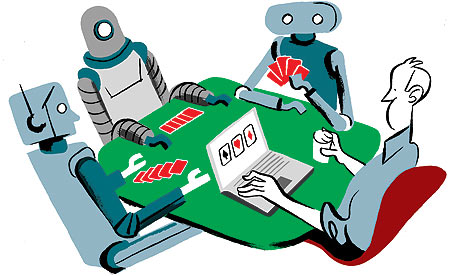

Poker Artificial Intelligence
Online Poker Bots
"Bots" are programs written to make money for unskilled poker players. It turns out that the only thing keeping the human gaming community in with a chance is the sheer difficulty, tedium, and cost-effectiveness of running the bots at a profit. Writing good bots isn't easy. There's the AI knowledge, the programming experience and the understanding of the strategy of the game at which you're planning to win money. Writing bots and playing them online is perfectly legal, it's just a violation of the sites' individual terms and conditions. They can't call the police but they can throw you off the site and seize money from your account. An important component of AI is the ability of machines to take action on their own without human intervention. This could take the form of a computer reprogramming itself in the face of an obstacle or restriction. In other words, to think for itself and to take action accordingly.
Cepheus, The Poker Playing Computer Program

The best limit Texas Hold'Em poker player in the world is a robot. The robot, named Cepheus, will lose if it's dealt an inferior hand, but it will minimize its losses as best as is mathematically possible and will slowly but surely take your money by making the perfect decision in any given scenario. It could be said that heads-up limit Hold'Em has been solved by computer scientists at the University of Alberta who don't actually play the game. Solving the game is more of a math problem than anything else. Cepheus is just trying to make the mathematically logical play, every single hand, regardless of opponent and is unlikely to overly penalize other players for their mistakes with large bets. If two Cepheus machines play, the winner will be whoever ends up getting the best cards. However, one of the bot’s limitations appears to be that it does not seem to adapt against a player’s change of style, something that could be its undoing.